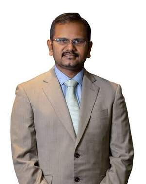

Brain
Tumours, bleeding, head injury and fluid problems of the brain, assessed with modern imaging and explained clearly.
See brain conditions →Dr. Prabu Rau Sriram is a consultant neurosurgeon and neurospine surgeon in Kota Kinabalu, caring for adults and children with conditions of the brain, spine, nerves and chronic pain. Clear explanations, careful planning, and a steady hand when it matters most.
Consulting hospital
Tumours, bleeding, head injury and fluid problems of the brain, assessed with modern imaging and explained clearly.
See brain conditions →Neurospine care for neck and back problems that press on the spinal cord or nerves, from slipped discs to spinal stenosis.
See spine conditions →Pinched or injured nerves that cause numbness, tingling, weakness or shooting pain in the arms and legs.
See nerve conditions →Persistent back, neck and facial pain, with surgical and non-surgical options explained honestly.
See pain conditions →Vascular neurosurgery (aneurysm, AVM, brain haemorrhage) and paediatric neurosurgery (hydrocephalus, childhood tumours, craniosynostosis).
Sudden severe headache, a drooping face, new weakness, or back pain with loss of bladder or bowel control need emergency care. Read the full guide to know when to wait and when not to.
Neurosurgery can feel overwhelming. The path is laid out in four steps so you know what comes next.
Your history, symptoms and any CT, MRI or angiogram images are reviewed together. Bring previous reports and images.
The findings, the options and the risks of each are explained in plain language, including the option of monitoring without surgery.
Where surgery or a procedure is advised, it is planned with you and your family, with the anaesthetic and hospital teams.
Monitoring, rehabilitation guidance and scheduled reviews until you or your child are back on track.
Seeking a second opinion on a diagnosis? That is welcome too.
Request an appointmentAny previous scan images and reports, a list of current medications, referral letters, and a short note of your symptoms and when they started. For children, bring the child’s health book.
A referral from a GP or another specialist is helpful but may not be required. Please check with the clinic when you book. To confirm
Yes. Bring your scans and reports, and Dr. Prabu can review the diagnosis and the options you have been given.
Sudden severe headache, weakness, loss of speech, seizures, loss of consciousness, or back pain with new numbness in the groin or loss of bladder or bowel control need emergency care. Go to the nearest emergency department or call 999 rather than booking a clinic visit.

Consultant Neurosurgeon & Neurospine Surgeon
Dr. Prabu Rau Sriram is a consultant neurosurgeon and neurospine surgeon practising in Kota Kinabalu, Sabah. He cares for patients with conditions of the brain, spine, nerves and chronic pain, and shares patient education on these conditions. His special interests are vascular neurosurgery, which treats disorders of the brain’s blood vessels, and paediatric neurosurgery.
He believes patients make better decisions when they understand their scans, their options and the honest trade-offs between them. Consultations are unhurried, and families are encouraged to ask questions.
To confirm Personal biography, training background and professional philosophy will be added once supplied by Dr. Prabu.
A guide to conditions of the brain, spine, nerves and pain, plus his vascular and paediatric special interests. It explains the basics; your own diagnosis and options are always discussed at consultation.
Growths in or around the brain, from benign to cancerous. Care starts with scans and a clear explanation of the options.
Assessment of serious head injuries, blood clots on the brain and skull fractures.
A build-up of fluid inside the brain that raises pressure and may need a shunt or endoscopic procedure.
A disc that bulges and presses on a nerve, causing arm or leg pain, numbness or weakness.
Narrowing of the spinal canal that can cause leg pain on walking, numbness and weakness.
A vertebra that slips forward over the one below, often causing back and leg pain.
Pressure on the spinal cord in the neck, causing clumsy hands, balance problems and weakness.
Growths in or around the spine and spinal cord that need careful imaging and planning.
Assessment and stabilisation of fractures from falls, accidents or weakened bones.
Shooting pain, tingling or weakness along a nerve from the neck or lower back into an arm or leg.
Pinched nerves such as carpal tunnel or ulnar nerve entrapment causing numbness and weakness in the hand.
Nerves damaged by trauma, assessed for the right timing and type of repair.
Pain lasting more than a few months, assessed to find whether a structural cause can be treated.
Sudden, severe, electric-shock facial pain, often triggered by touch, eating or talking.
Persistent leg or back pain after a previous operation, reviewed with fresh imaging and an open conversation.
A weak, bulging spot on an artery in the brain. Some are found by chance on a scan; a rupture causes a sudden, severe headache and needs emergency care.
A tangle of vessels where arteries connect directly to veins. It can cause seizures, headaches or bleeding.
A cluster of abnormal, thin-walled vessels that can cause seizures or small bleeds.
Bleeding within or around the brain from high blood pressure, vessel abnormalities or injury, often needing urgent assessment.
A narrowing of the arteries at the base of the brain that can cause strokes or stroke-like episodes in children and adults.
Unsure what an incidental finding means? A review of your imaging can clarify whether treatment or monitoring is the better path.
A build-up of fluid within the brain. Treatment aims to restore normal fluid flow, often with a shunt or an endoscopic procedure.
Assessment and, where appropriate, surgery, coordinated with paediatric oncology and radiology colleagues.
Early fusion of the skull’s growth joints, which can change head shape and, in some children, raise pressure inside the skull.
Conditions of the developing spine and spinal cord that may need surgery and long-term follow-up.
Brain tissue that sits low at the skull base and can cause headaches, neck pain or balance problems.
Assessment of serious head injuries, bleeding and skull fractures, and guidance on recovery.
Careful examination with CT, MRI and angiography to reach a precise diagnosis.
Operations such as craniotomy, disc and spinal decompression, planned in detail beforehand.
Medication, physiotherapy guidance and targeted injections where they are the better first step.
To confirm: Final list of conditions and procedures will be matched to Dr. Prabu’s actual scope of practice before launch. This page is general information and not medical advice.
Short, plain-language guides on conditions of the brain, spine, nerves and pain. They help you decide how quickly to seek care. They do not replace an examination.
A weak, bulging spot in the wall of a brain artery. Many are found by chance on a scan and never rupture, but a rupture is a medical emergency.
A build-up of fluid inside the brain that raises pressure. It can affect babies, children and adults.
An abnormal growth in or around the brain. Many types exist, and not all are cancerous.
A disc between the spine bones bulges out and can press on a nearby nerve. Most people improve without surgery over weeks to months.
Narrowing of the space in the spine that squeezes the nerves, most often in older adults.
Pressure on the spinal cord in the neck, often from wear and tear. It can progress slowly and is easy to miss.
Pain that runs from the lower back or buttock down the leg, usually from a pinched nerve root in the spine.
A nerve is squeezed as it passes through a narrow space, commonly at the wrist or elbow.
Sudden, severe, electric-shock pain on one side of the face, caused by irritation of the trigeminal nerve.
Pain lasting longer than about 3 months. Most is not dangerous, but some causes need treatment and a few need urgent care.
General information only, not medical advice. To confirm Dr. Prabu to review this content before launch.
Photographs of the consulting rooms, hospital facilities and professional events will appear here.
Send a request and the clinic team will reply to arrange a suitable time.
Suite No. 114, Level 1, Block A 1, Gleneagles Hospital Kota Kinabalu, Riverson@Sembulan, 88100 Kota Kinabalu, Sabah.
Open in Google Maps